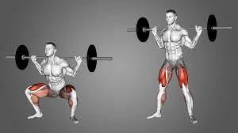

Squats: This compound exercise targets the quadriceps, hamstrings, and glutes. Stand with feet shoulder-width apart, lower your hips down as if sitting back into a chair, and then push through your heels to return to a standing position.
Lunges: This exercise targets the quadriceps, hamstrings, and glutes. Step forward with one foot and lower your body until both knees are bent at a 90-degree angle. Push back up to the starting position and repeat with the other leg.
Deadlifts: This compound exercise primarily targets the hamstrings and glutes. Stand with feet hip-width apart, hold a barbell or dumbbells in front of you, and hinge at the hips while maintaining a neutral spine. Lower the weight down, keeping it close to your legs, and then return to a standing position.
Calf Raises: Stand with your feet shoulder-width apart, raise your heels as high as possible, and then lower them back down. To increase the difficulty, perform calf raises on a step or with a weighted barbell.
Bulgarian Split Squats: Stand in a lunge position with one foot elevated behind you on a bench or step. Lower your body down until your front thigh is parallel to the ground, and then push back up to the starting position. Repeat with the other leg.
Romanian Deadlifts: Hold a barbell or dumbbells in front of your thighs, hinge at the hips while maintaining a slight bend in your knees, and lower the weight by pushing your hips back. Keep your back flat and return to the starting position by squeezing your glutes and engaging your hamstrings.
Step-Ups: Step onto a raised platform or bench with one foot, push through that foot, and lift your body up onto the platform. Lower back down and repeat with the other leg.
Hamstring Curls: Using a machine or resistance bands, lie face down and curl your legs up towards your glutes by engaging your hamstrings. Slowly lower your legs back down and repeat.
Sumo Squats: Stand with your feet wider than shoulder-width apart, toes pointed outward, and lower your body into a squat position while keeping your back straight. Push through your heels to return to a standing position.

Glute Kickbacks: Position yourself on all fours, with your hands directly under your shoulders and knees under your hips. Kick one leg back and up, focusing on squeezing your glute at the top. Lower your leg and repeat with the other leg.